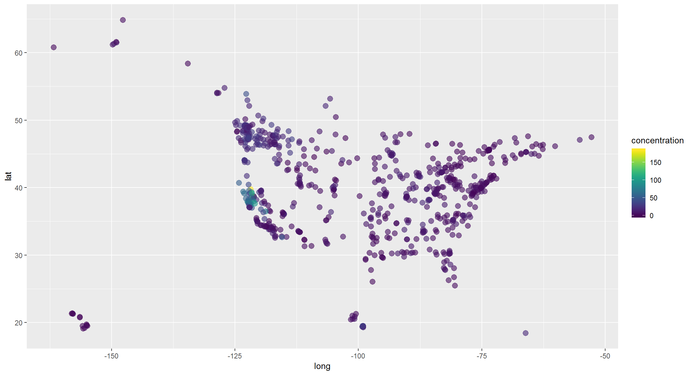
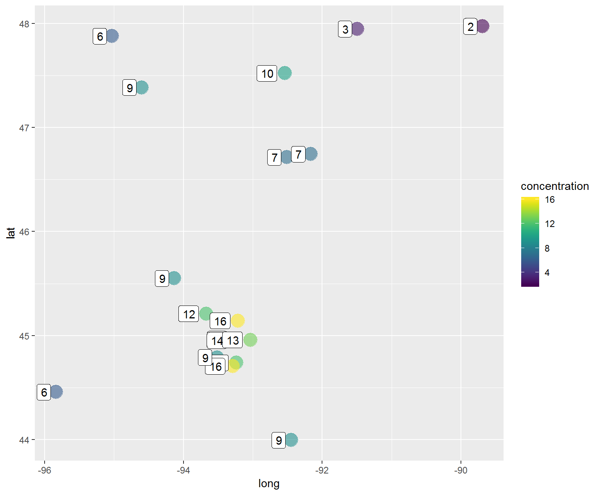

Web data

This path includes examples of downloading online data from FTP sites and other data stores.
EPA’s AirNow
Air data for the entire United States is at your finger tips. AirNow maintains a publicly accessible folder of current air monitoring data at Today’s air quality.
Use the following code to grab the most recent AQI results for the United States.
Get air monitoring data
library(dplyr)
library(readr)
# Connect to AirNow data site
airnow_link <- paste0("https://s3-us-west-1.amazonaws.com//files.airnowtech.org/airnow/today/HourlyData_",
format(Sys.time() -60*75, "%Y%m%d%H", tz = "GMT"), #Subtracts one hour from current hour
".dat")
# Read a "|" delimited file that has no column names (Thanks EPA!)
aqi_now <- read_delim(airnow_link, "|", col_names = F)
# Add column names as a list
names(aqi_now) <- c("date", "time", "aqsid", "city", "local_time", "parameter", "units", "concentration", "agency")
# Filter to Ozone and PM2.5 results
aqi_now <- filter(aqi_now, parameter %in% c("OZONE", "PM2.5"))
# Show table of top concentration results
aqi_now %>% arrange(desc(concentration)) %>% select(-time, -aqsid, -units) %>% head(10)## # A tibble: 10 x 6
## date city local_time parameter concentration agency
## <chr> <chr> <int> <chr> <dbl> <chr>
## 1 11/14~ Chico - ~ -8 PM2.5 184 California Air Re~
## 2 11/14~ Beijing 8 PM2.5 179 U.S. Department o~
## 3 11/14~ Arden Arc~ -8 PM2.5 176 Sacramento Metro.~
## 4 11/14~ Elk Grove -8 PM2.5 115 Sacramento Metro.~
## 5 11/14~ Yuba City -8 PM2.5 114 California Air Re~
## 6 11/14~ "Downtown~ -8 PM2.5 109 California Air Re~
## 7 11/14~ Ulaanbaat~ 8 PM2.5 99 U.S. Department o~
## 8 11/14~ Modesto -~ -8 PM2.5 96 California Air Re~
## 9 11/14~ San Rafael -8 PM2.5 85 San Francisco Bay~
## 10 11/14~ Sequoia a~ -8 PM2.5 82.3 National Park Ser~Get monitoring locations
The air monitoring locations can be accessed from AirNow as well.
# Connect to AirNow data site
airnow_link <- "https://s3-us-west-1.amazonaws.com//files.airnowtech.org/airnow/today/monitoring_site_locations.dat"
# Read a pipe (|) delimited file
aqi_sites <- read_delim(airnow_link, "|", col_names = F)
# Drop empty columns
aqi_sites <- aqi_sites[ , -c(14:16,22:23)]
# Add column names
names(aqi_sites) <- c("aqsid",
"parameter",
"local_id",
"name",
"status",
"state_region",
"agency",
"epa_region",
"lat",
"long",
"elevation",
"local_time",
"country",
"city",
"state_fips",
"state",
"county_fips",
"county")
# Drop the parameter column and take *unique* rows
aqi_sites <- aqi_sites %>% select(-parameter) %>% unique()Join tables and map PM2.5 concentrations
library(ggplot2)
library(viridis)
# Add site locations to monitoring data
aqi_now <- left_join(aqi_now, aqi_sites, by = "aqsid")
# Plot map of sites for PM2.5
filter(aqi_now, parameter == "PM2.5", !is.na(lat)) %>%
ggplot(aes(x = long, y = lat)) +
geom_point(aes(color = concentration), size = 3, alpha = 0.6) +
scale_color_viridis() 
Map Minnesota
library(ggplot2)
library(viridis)
# Filter to Minnesota
aqi_mn <- filter(aqi_now, state == "MN")
# Plot map of sites for PM2.5
filter(aqi_mn, parameter == "PM2.5") %>%
ggplot(aes(x = long, y = lat)) +
geom_point(aes(color = concentration), size = 6, alpha = 0.6) +
geom_label(aes(label = concentration), hjust = 1.4) +
scale_color_viridis() 
Weather alerts
The script below will make a map of the current weather alerts in the Midwest. Hint: You will need to install new packages.
Install the latest version of weatherAlerts with:
install.packages("devtools")`
devtools::install_github("ianmcook/weatherAlerts")
devtools::install_github("ianmcook/weatherAlertAreas")library(tidyverse)
library(weatherAlerts)## Error in library(weatherAlerts): there is no package called 'weatherAlerts'library(weatherAlertAreas)## Error in library(weatherAlertAreas): there is no package called 'weatherAlertAreas'library(leaflet)
alerts <- getAlerts(includeStates = c("MN", "WI", "ND", "SD", "IA", "MI", "IL", "IN", "OH", "MO", "FL")) # takes about 20 seconds## Error in getAlerts(includeStates = c("MN", "WI", "ND", "SD", "IA", "MI", : could not find function "getAlerts"# Save alert severity to a list
severity <- alerts@data$severity## Error in eval(expr, envir, enclos): object 'alerts' not found# Assign alerts a color based on severity ranking
colorMap <- c(Minor = "green",
Moderate = "yellow",
Severe = "red",
Extreme = "magenta",
Unknown = "grey")
severityColors <- unname(colorMap[severity])## Error in unname(colorMap[severity]): object 'severity' not foundleaflet() %>%
addProviderTiles(providers$OpenStreetMap) %>%
addPolygons(data = alerts,
fillColor = severityColors,
color = "black", # Border color
weight = 1,
label = ~title)## Error in filterNULL(list(stroke = stroke, color = color, weight = weight, : object 'severityColors' not found# Hover for alert information.Return to the top of the page.